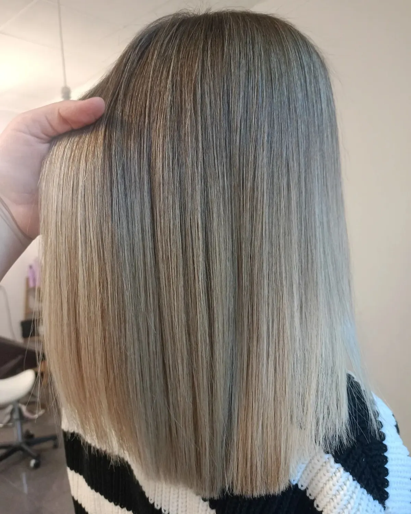
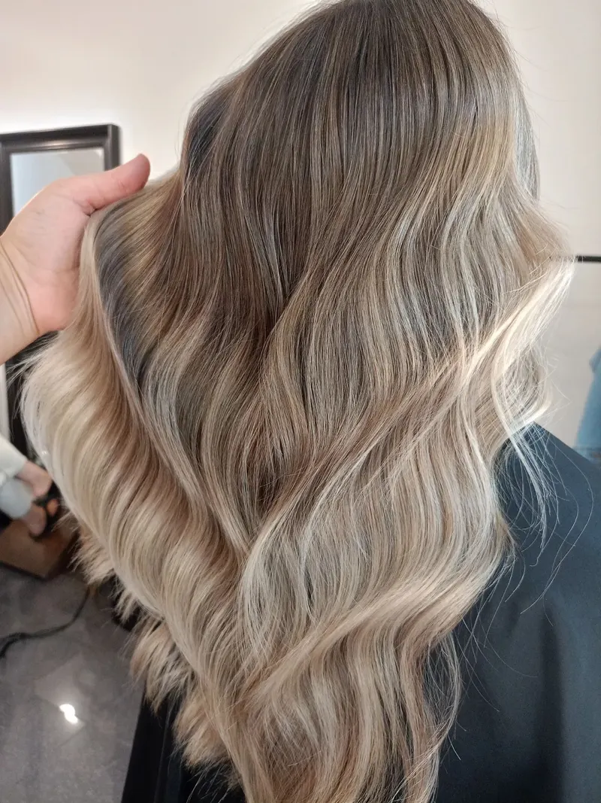
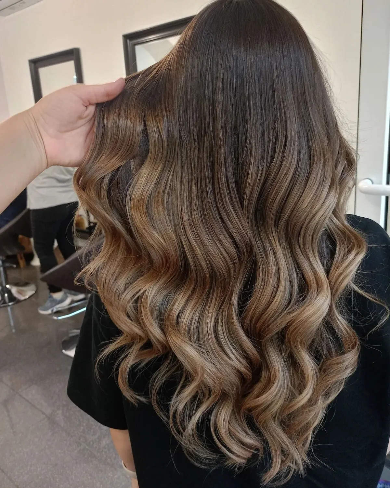
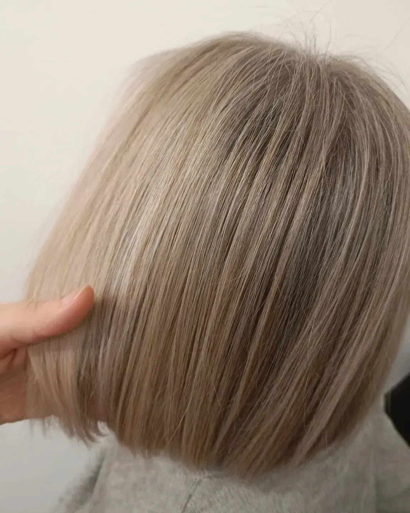
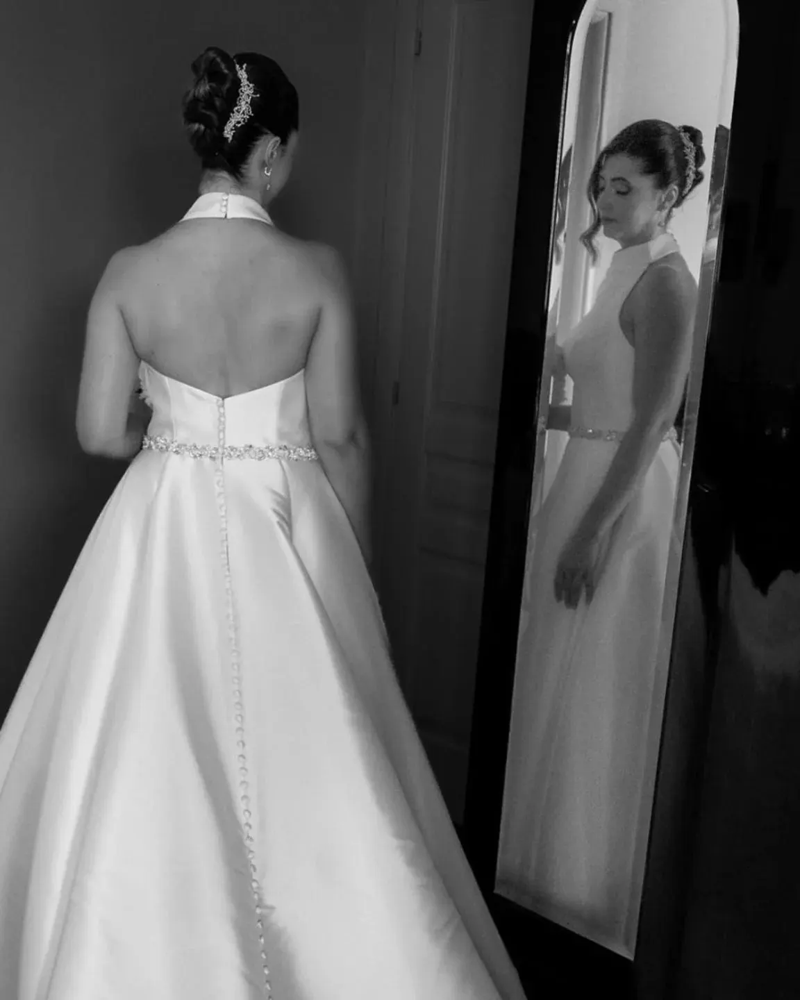
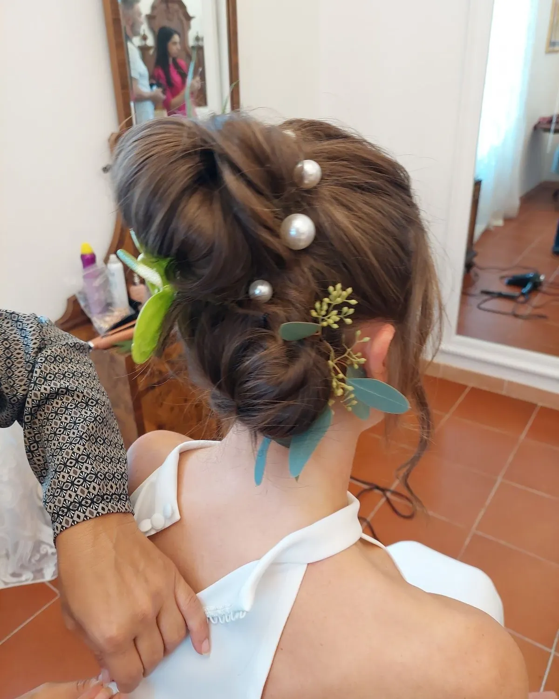

Balayage
Il mio lavoro di tutti i giorni: schiariture che crescono bene. C’è chi torna per il ritocco dopo un anno.
Sito dimostrativo
Faccio la parrucchiera dal 2007 e dal 2016 ho il mio salone. Mi piace la naturalezza: un colore bello è quello che non sembra fatto.

Il mio lavoro di tutti i giorni: schiariture che crescono bene. C’è chi torna per il ritocco dopo un anno.

Beige, caldo, naturale o ghiaccio: il biondo giusto è quello che ti somiglia.

Quando il colore è andato storto, si riparte con calma e si sistema.

Si possono «ingannare» con le schiariture, senza la riga della ricrescita.


Acconciatura e prova, in salone o dove ti prepari. Arrivo io, con tutto quello che serve, e resto finché sei pronta.
Scrivimi la data